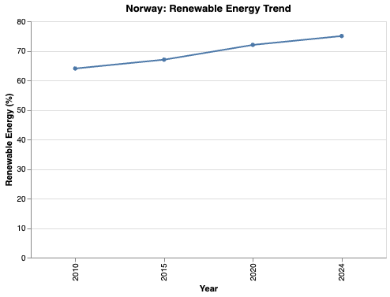
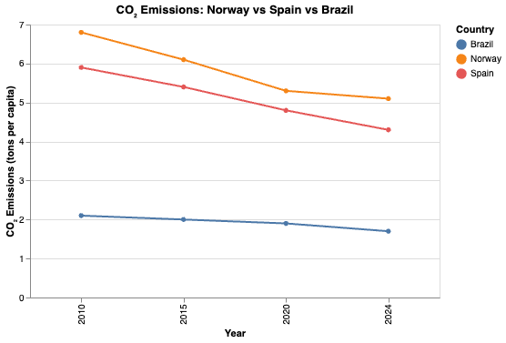

Stacked Area Chart: Power Consumption by Continent

This stacked area chart shows average power consumption per person for each continent over time. The width of the chart represents the years from 2010 to 2024, and the height of the colored bands shows how much electricity people use in each continent. Europe forms the largest band, reflecting higher energy usage, while Africa has the smallest but gradually increasing band. The total height rises slightly, indicating that overall electricity consumption per person is increasing across these regions.
Line Chart: Norway Renewable Energy Trend
The line chart for Norway focuses on changes in renewable energy percentage over time. The line moves steadily upward, showing that Norway has expanded its use of renewable energy sources from 2010 through 2024. This trend illustrates a strong commitment to sustainable energy and provides a clear example of long-term growth in renewables.
Comparative Line Chart: CO₂ Emissions (Norway, Spain, Brazil)
This comparative line chart shows CO₂ emissions per person for Norway, Spain, and Brazil. Spain starts at the highest emission level and gradually decreases over time. Norway begins at a moderate level and also moves downward, while Brazil stays at the lowest level with only small changes. Putting all three lines on one graph makes it easier to see which countries are reducing emissions more quickly and how their environmental performance compares.